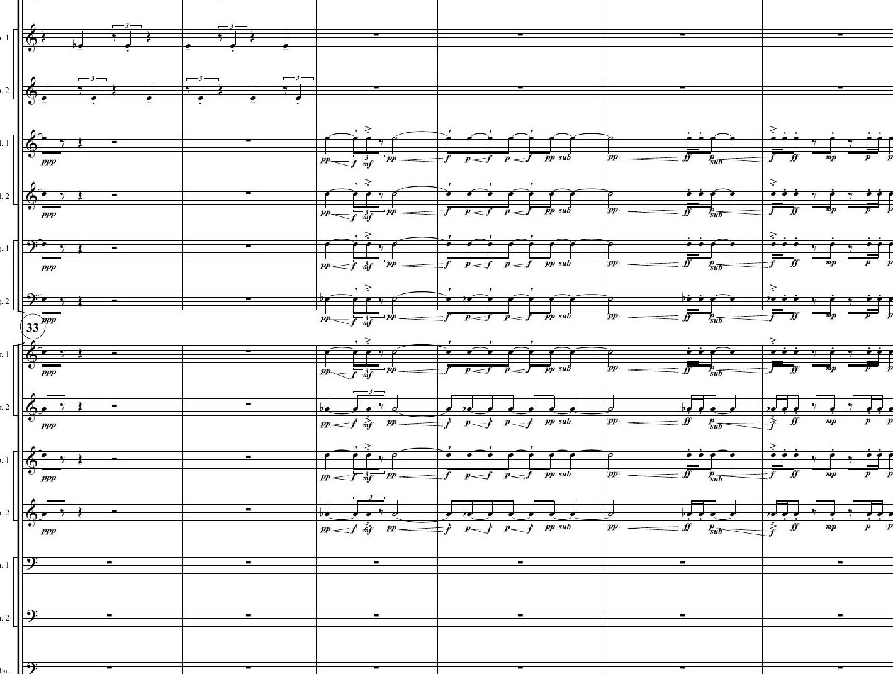
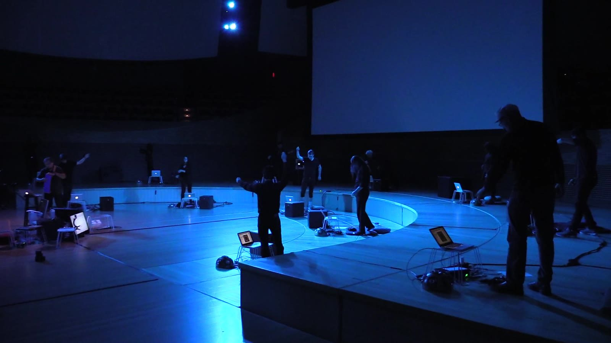
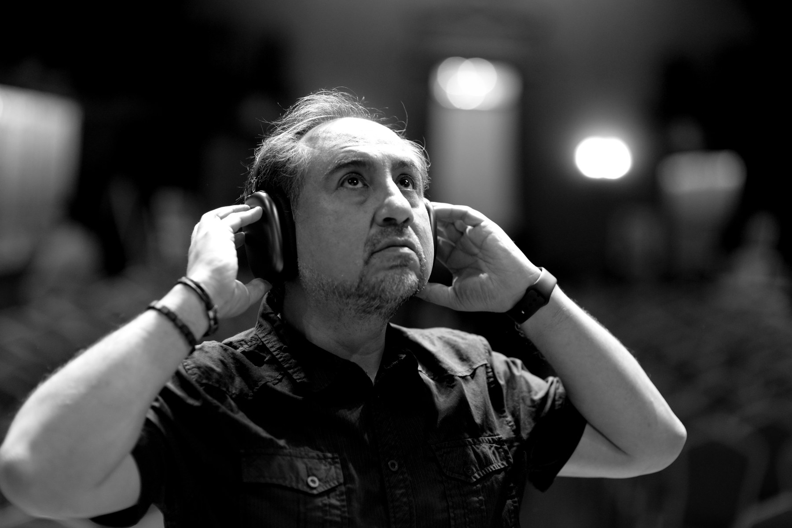
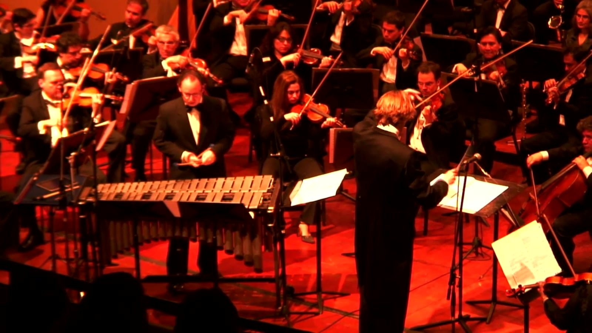
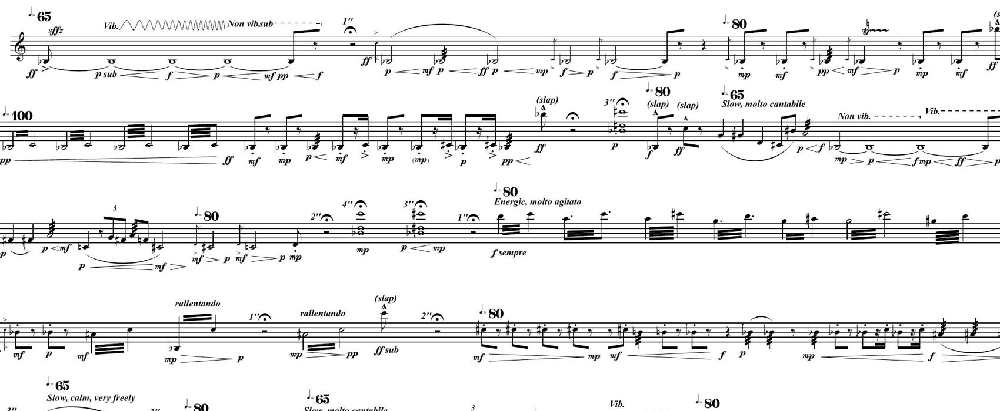
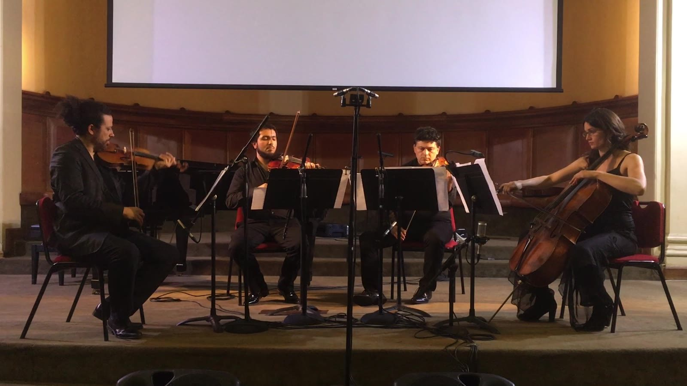
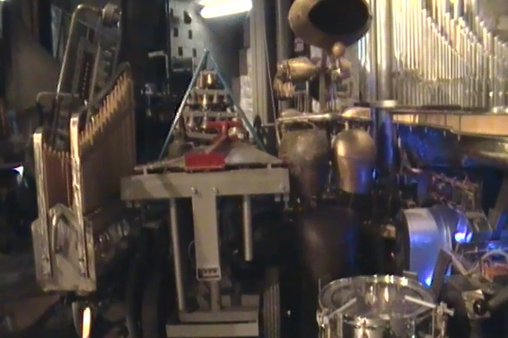
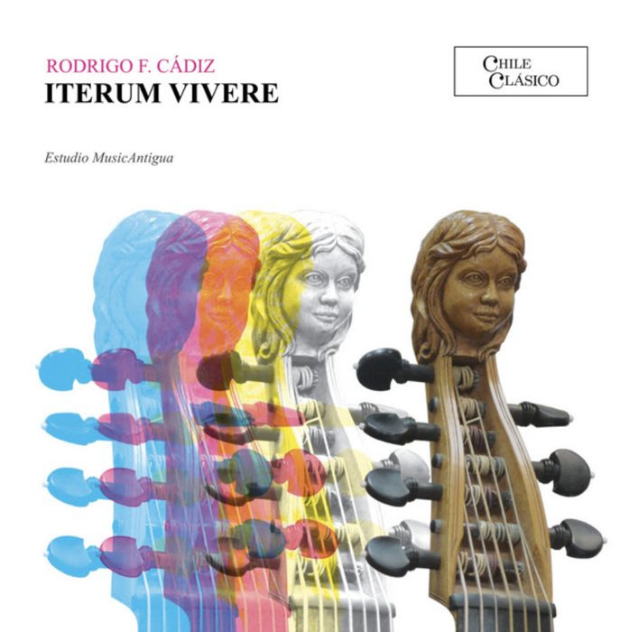
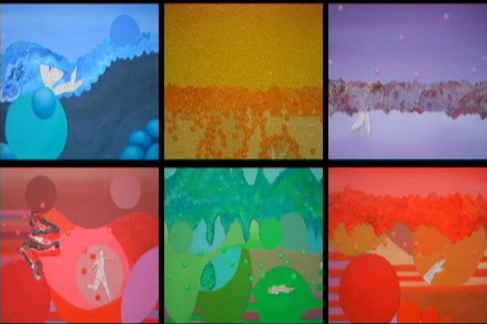
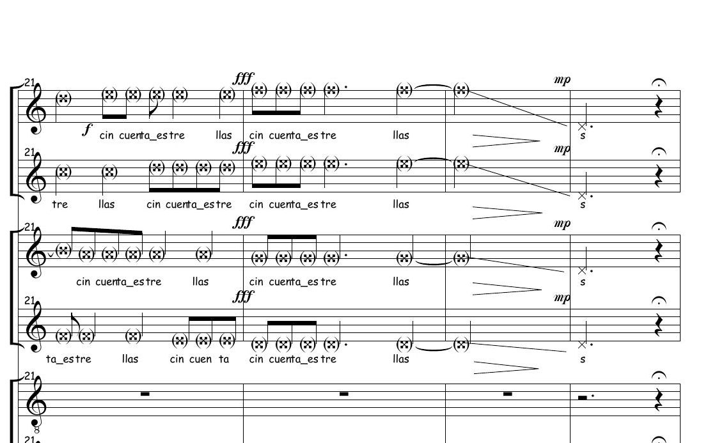

ComposerCompositor
Ten thematic groupings of the catalogue. One work per screen; arrow keys or swipe to move.Diez agrupaciones temáticas del catálogo. Una obra por pantalla; flechas o deslizar para avanzar.

12Works derived from mathematical, physical, chemical or biological modelsObras derivadas de modelos matemáticos, físicos, químicos o biológicos

16The Arcontinuo, motion controllers, brain computer interfaces and augmented instrumentsEl Arcontinuo, controladores de movimiento, interfaces cerebro computador e instrumentos aumentados

16Multichannel works for loudspeaker orchestra, mostly eight channelsObras multicanal para orquesta de altavoces, en su mayoría de ocho canales

6Symphony orchestra, string orchestra, concertos and orchestra with electronicsOrquesta sinfónica, orquesta de cuerdas, conciertos y orquesta con electrónica

9Works for one performer, with and without electronicsObras para un intérprete, con y sin electrónica

17Duos, trios, quartets and mixed ensembles, with and without electronicsDúos, tríos, cuartetos y conjuntos mixtos, con y sin electrónica

3Works for laptop orchestra and for robotic performersObras para orquesta de laptops y para intérpretes robóticos

4Violas da gamba, harpsichord and early music ensemble with live electronicsViolas da gamba, clavecín y ensemble de música antigua con electrónica en vivo

8Video, sculpture and space composed with the soundVideo, escultura y espacio compuestos junto al sonido

3A cappella chorus and voice with electronicsCoro a cappella y voz con electrónica